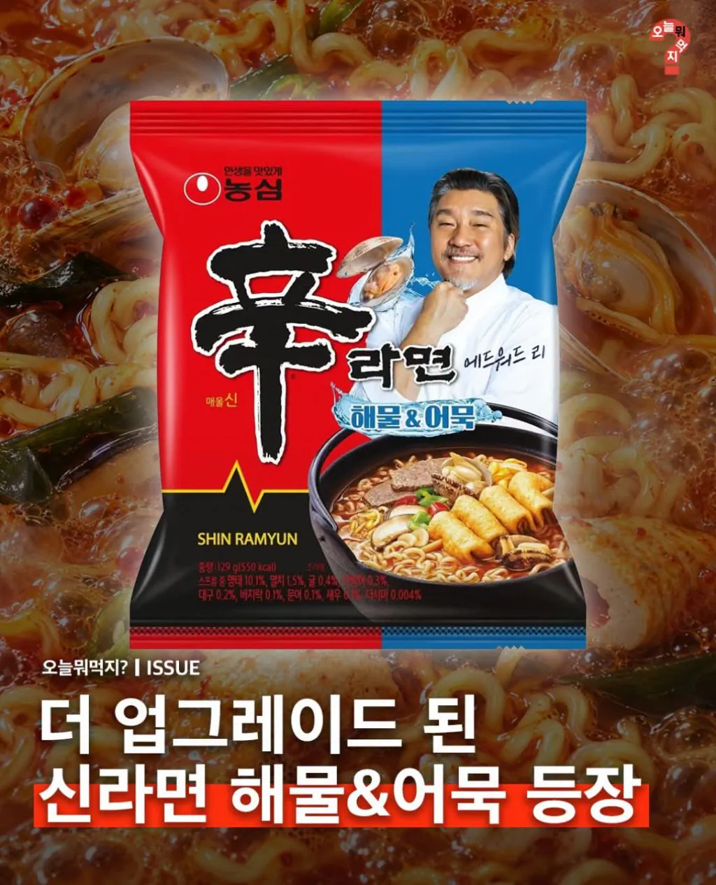

어...?

어...?
라면어묵은 맛잇음. 조리 전에 어묵으로 살짝 기름내고 조리해주면 좋음
너구리에 꼬지어묵 넣고 꽃게액젓 반숟갈 넣으면 콤콤하면서 쳐직
애초에 라멘에 나루토어묵 근본중의 근본인데 뭐
라면에 어묵 넣는것보다 어묵국물에 라면 넣는게 더 맛있을거 같아
어묵 넣는건 맛있는데 왜
억까는 ㄴㄴ 그거말고도 깔거 수천가지임
제육에 어묵을...
그것도 나쁘지 않아
무려 강호동이 남긴 전설의...
간장 서너바퀴 돌린 소금탕에 물잔뜩 붓고 전분넣어 만든 괴식이라…
애초에 어묵이란 재료를 깐게 아니야
백종원의 요리실력을 깐거지 이미 쇼앤프룹한 애드워드리가 어묵을 쓴다는데 이유가 있겠지
여기저기 어묵 넣고 보는 거 지적하는 게 억까임?
라면에 어묵은 최소 50년 된 것 같은데
뜬금없이 우동 땡기네
아니 ㅅㅂ 나만 조세호로 보이냐 ㅋㅋㅋ
오 이건 좀 궁금한데
라면에 어묵 넣은게 누군지 알아유?!
청춘라면 가고싶네
모든 곳에 어묵을
넣으시는 분이 있어서 그렇지 ㅋㅋ
저거 말고 일반 라면에 어묵 넣어도 괜찮은데 조금만 넣어라. 어묵 많이 넣으면 국물 달아짐. 취향에 맞으면 그러고
어묵라면 어묵파스타 하면서 어묵 많이 넣으면 들척지근한 어묵맛만 남음. 특히 라면은 어묵 많이 넣으면 맛 조짐
어쩐지 아침에 회사 라면 코너에 원래는 부가적으로 넣을수 있는게 유부 숙주 파 청경채 정도 있던게 채썬 어묵도 생긴게 저거 때문인가보넹
김치에 어묵을 넣지 말라는 법이 있을까?
사람이 문제였구만
리선생.. 내 이 일은 잊지않겠소...
라면이랑 어묵 적당히 먹어라
둘 다 인산염 첨가제 범벅이라 나중에 나이들면 골다공증 온다 ㅋㅋㅋ
갑자기 철학이 느껴짐